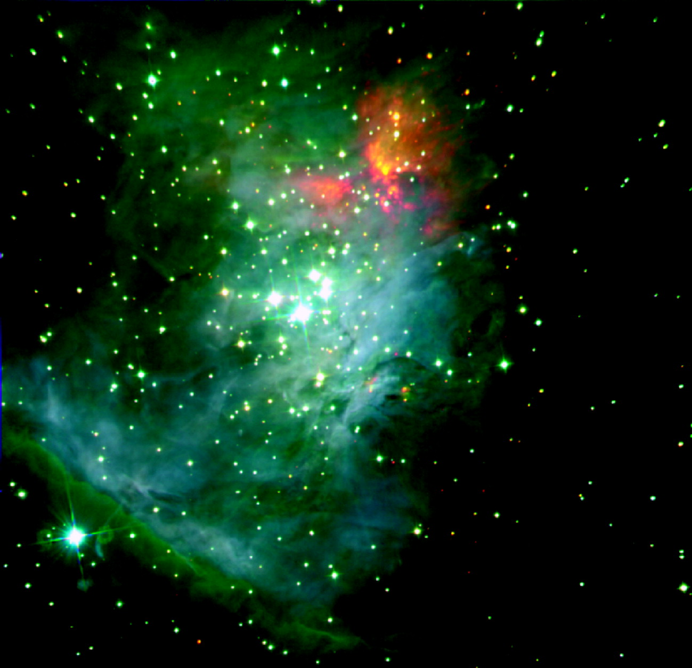
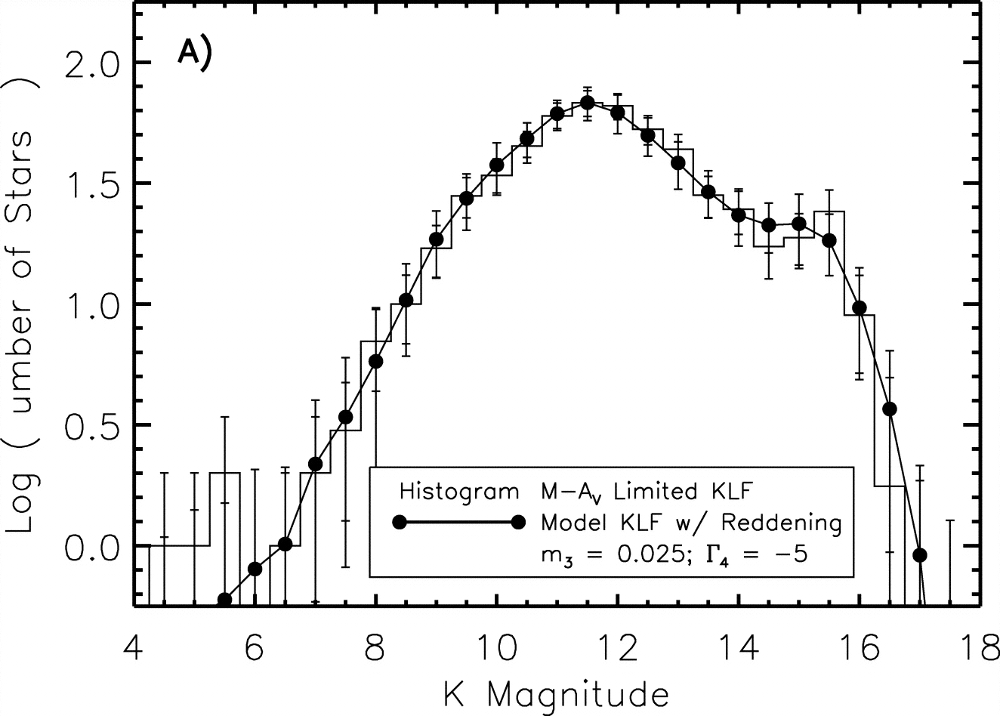
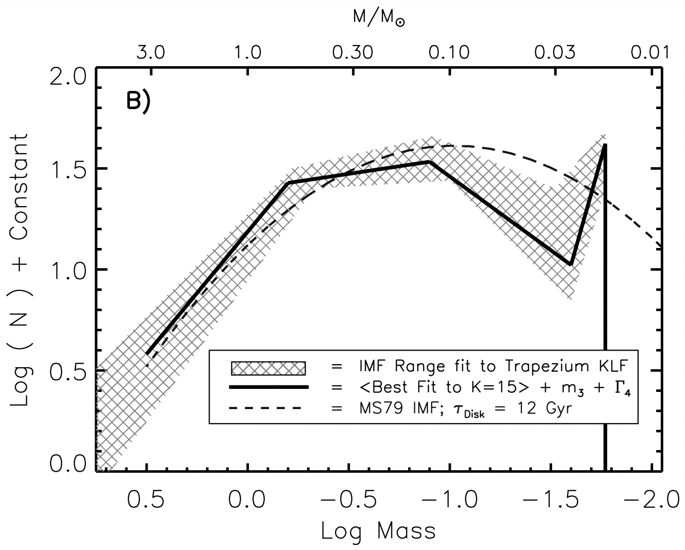

| |
Stellar Initial Mass Function
The CASt dataset
ONC_KLF.dat
Astronomical background
A fundamental statistical properties of the stellar population
in our Galaxy is the Initial Mass Function (IMF), the distribution of
stellar masses
in a random volume. The IMF is an important constraint on the formation
processes
of stars in molecular clouds, and determines the relative importance of
low-mass and high-mass stars in the mass and energy budget of the
Galaxy. In a seminal 1955 study, Edwin Salpeter showed that the IMF for
higher mass stars follows a powerlaw distribution with slope -1.35
(dN/dM ~ M-1.35). Many subsequent studies
have shown that the Salpeter IMF is nearly universal in many stellar
systems
(field stars, open clusters, globular clusters, pre-main sequence
clusters),
star formation environments, and galaxies. This clearly cannot extend
to arbitrarily low masses, and most recent effort has been devoted to
establishing
the IMF at very low masses including brown dwarfs. Recent
determinations
show that the IMF exhibits a broad peak around 0.3 Mo (solar
masses) and falls off at lower masses. It has been parametrized in
terms of
several "broken" powerlaws, or as a lognormal distribution plus a
Salpeter
powerlaw. Recent research is summarized in the conference proceedings
The Initial Mass Function 50 Years Later (2005).
Three difficulties can be noted in establishing the stellar
IMF:
(1) masses are not observed directly, and must be inferred from
photometric
(brightness and color) and spectroscopic data; (2) complete unbiased
samples must be used, particularly including the intrinsically faint
brown
dwarfs; and (3) the "observed" mass function will be often be biased
with respect to the "initial" mass function emerging from the star
formation process due to the rapid evolution of high mass stars.
Examination of the population of concentrated young stellar clusters
reduces
problems 2 and 3. The best young stellar cluster for study is the Orion
Nebula
Cluster (ONC) which illuminates the Orion Nebula (visible to the naked
eye on
winter evenings). Here, stellar brightnesses in the near-infrared K
band are
less sensitive to interstellar absorption than visible band
brightnesses.
Contamination by unrelated foreground and background stars is low.
Conversions
from K-band luminosities to masses is based on theoretical models of
pre-main sequence stellar interiors. The ONC K-band luminosity function
(KLF) is thus one of the premier datasets for establishing the stellar
IMF.
Dataset
The dataset we provide here is the K-band magnitudes of 714
stars
in the central 5'x5' (arcminutes) of the Orion Nebula Cluster obtained
with
the European Southern Observatory New Technology Telescope by Muench et
al.
(2002). The dataset has two columns: a star identifier (which can be
ignored)
and a K band magnitude. Magnitudes are an inverted logrithmic measure
of
brightness so that the stars around K~5 are the brightest and most
massive while those around K~15 are the faintest and least massive.
A. Muench, E. A. Lada, C. J. Lada and J. Alves, 2006, "The luminosity
and mass function of the Trapezium Cluster: From B stars to the
deuterium-burning limit", Astrophys. J. 573, 366-393
The first figure below shows the near-infrared JHK image from
which the ONC stars were selected. The following diagrams show
the distribution of K-band magnitudes, a broken-powerlaw model of the
KLF, and the corresponding IMF.


Statistical exercises
- Display and characterize the ONC KLF in a variety of
fashions: summary statistics, histogram, smoothing and other methods of
nonparametric density estimation.
- Model the ONC KLF in terms of powerlaw distributions,
powerlaw+lognormal, and (log)normal mixture models. Determine
best-fit parameters and their confidence intervals.
- Evaluate the possibility that a distinct population of
brown dwarfs around K~15.5 is present in the data.
|